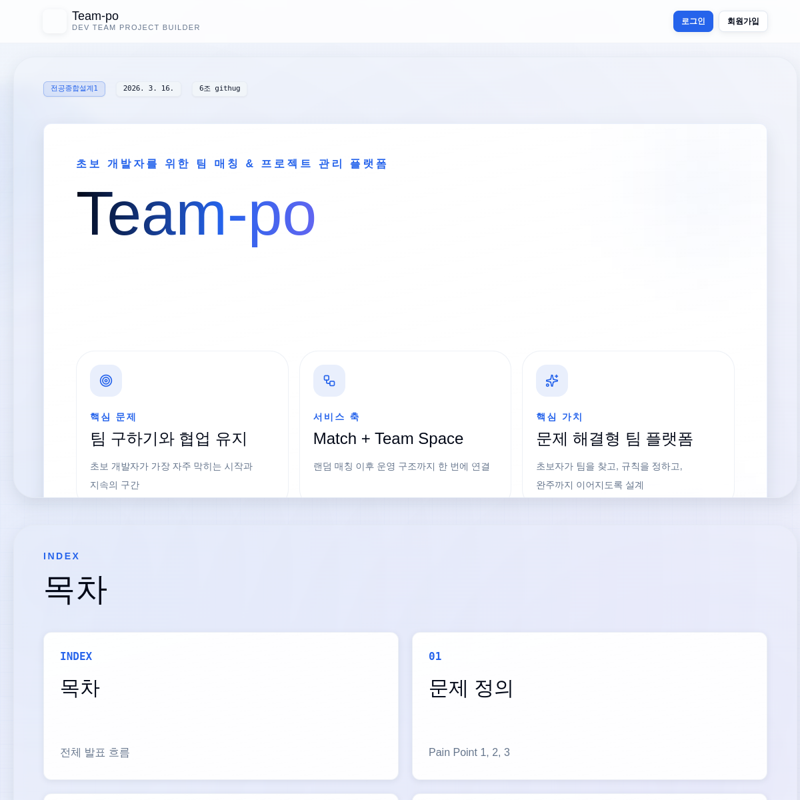

요구사항을 정책으로 바꿉니다.
팀원 수, HOST 수, ACTIVE 팀 중복 소속처럼 흔들리면 안 되는 규칙을 먼저 검증 대상으로 정리합니다.
Profile
부학생회장 경험에서 여러 이해관계자의 의견을 정리하고 실행으로 옮긴 경험이 있습니다. 개발에서도 기획, 프론트엔드, 팀원과 API 계약, 예외 메시지, 일정, 리뷰 피드백을 맞추며 안정적인 결과를 만드는 사람으로 일하고 싶습니다.
팀원 수, HOST 수, ACTIVE 팀 중복 소속처럼 흔들리면 안 되는 규칙을 먼저 검증 대상으로 정리합니다.
종료, 수정 제한, 동시 요청처럼 운영 중 발생할 수 있는 상황을 트랜잭션과 락 관점에서 봅니다.
GitHub, Gemini API 연동에서는 권한, 재시도, 중복, 파싱 실패를 별도의 리스크로 나누어 처리했습니다.
Reading Guide
신입/주니어가 맡은 범위, 팀 전체 기능과 직접 기여를 구분해 빠르게 확인할 수 있게 구성했습니다.
권한, 트랜잭션, 락, 외부 API 실패, 대량 조회 부담처럼 구현 뒤에 숨어 있는 리스크를 함께 적었습니다.
긴 기술 나열 대신 문제 상황과 선택 이유를 같은 형식으로 반복해 읽는 부담을 줄였습니다.
Main Project
팀 매칭 이후 프로젝트 팀스페이스를 운영할 수 있도록 돕는 협업 플랫폼입니다. 저는 백엔드에서 팀스페이스 정책, 체크리스트, GitHub 연동, 종료 동의, 팀 룰, 테스트와 마이그레이션 흐름을 주로 맡았습니다.

팀 매칭, 팀스페이스 운영, 체크리스트, GitHub Repository/PR 연동, AI 조언, 팀 룰, 프로젝트 종료 흐름이 하나의 협업 경험으로 이어지도록 설계했습니다.
팀스페이스 생성 정책, 체크리스트 API, GitHub App 설치와 PR 기여도 동기화, 전원 동의 기반 종료 API, Markdown 팀 룰과 낙관적 락, 테스트/CI/Flyway 검증을 구현했습니다.
Contributions
각 항목은 같은 구조로 읽힙니다. 문제 상황과 예상 리스크를 먼저 적고, 그 다음 기술적 선택, 구현 방식, 결과와 배운 점을 연결했습니다.
매칭 결과가 잘못 반영되면 이후 체크리스트, 팀 룰, GitHub 연동까지 잘못된 팀을 기준으로 동작할 수 있습니다.
팀 생성 시점에 정책 검증을 집중시키고, 생성 이후 후속 기능이 연결될 수 있도록 이벤트 기반 흐름을 고려했습니다.
팀원 수, HOST 수, 중복 사용자, ACTIVE 팀 중복 소속을 검증하고 매칭 결과 기반으로 팀스페이스를 생성/조회했습니다.
도메인의 첫 진입점에서는 단순 저장보다 정책 불변성을 먼저 지키는 것이 후속 기능의 안정성을 높인다는 점을 배웠습니다.
담당자가 실제 팀원이 아니거나 프로젝트 종료 후에도 수정이 가능하면 협업 기록의 신뢰도가 떨어집니다.
담당자 검증과 상태 기반 쓰기 제한을 API 레벨에서 처리하고, AI 응답은 신뢰할 수 없는 외부 입력으로 다뤘습니다.
할 일 생성/조회/수정/삭제를 구현하고, 담당자 팀원 여부와 종료 상태를 검증했습니다. Gemini API 응답은 JSON 파싱과 필드 검증 실패를 예외로 분리했습니다.
CRUD 기능도 권한, 상태, 외부 응답 검증을 함께 고려해야 운영 가능한 API가 된다는 점을 체감했습니다.
외부 GitHub API 연동은 state 재사용, 권한 없는 Repository 선택, PR 중복 저장, 대량 조회 부담이 함께 발생할 수 있습니다.
Redis state를 callback에서 get-and-delete 방식으로 소비하고, HOST 권한과 접근 가능한 Repository 검증을 서버에서 강제했습니다.
GitHub App 설치 URL 생성과 완료 처리를 구현했습니다. PR 동기화 시 이미 저장된 PR은 중복 저장하지 않고, IN 쿼리 부담을 줄이기 위해 chunk 단위 조회를 적용했습니다.
외부 API 호출과 DB 저장 트랜잭션을 분리해 장애 범위를 줄였습니다. 연동 기능에서는 성공 흐름보다 실패와 재호출 가능성을 먼저 설계해야 한다는 점을 배웠습니다.
한 명의 요청으로 프로젝트가 종료되면 팀원 간 합의가 깨질 수 있고, 동시에 요청될 때 상태 전이가 꼬일 수 있습니다.
전원 동의 기반 종료 구조를 선택하고, 프로젝트 상태 전이를 트랜잭션과 락으로 보호했습니다.
팀원별 종료 동의 여부를 기록하고 모든 팀원이 동의했을 때만 종료 상태로 전이되도록 구현했습니다. 동시 요청 시 데이터 정합성을 고려해 락을 적용했습니다.
상태 전이는 UI 버튼 하나처럼 보여도 도메인 합의와 데이터 정합성을 함께 다뤄야 하는 백엔드 책임이라는 점을 배웠습니다.
팀 규칙은 여러 사용자가 함께 수정할 수 있어 마지막 저장이 이전 수정 내용을 덮어쓰는 충돌이 발생할 수 있습니다.
Markdown 저장 방식으로 유연성을 확보하고, version 기반 낙관적 락으로 수정 충돌을 감지했습니다.
팀별 규칙 저장/수정/조회를 구현했습니다. 최초 조회 시 기본 팀 룰을 자동 생성하고, 종료된 팀스페이스에서는 수정하지 못하도록 제한했습니다.
협업 규칙을 문서로만 남기지 않고 기능으로 지원하면서, 소통 방식도 백엔드 도메인 모델에 반영될 수 있다는 점을 배웠습니다.
로컬 H2 테스트만 통과해도 실제 MySQL, Flyway 마이그레이션에서 스키마 차이가 발생할 수 있습니다.
빠른 로컬 테스트와 실제 DB 검증 성격을 분리하고, Flyway migration으로 스키마 변경 이력을 관리했습니다.
H2 기반 테스트 프로필과 MySQL/Flyway 검증 프로필을 분리했습니다. CI에서 단순 실행 여부뿐 아니라 마이그레이션 흐름도 확인할 수 있도록 구성했습니다.
기능 구현 후 수동 확인에서 멈추지 않고 실행 환경까지 고려해야 팀 프로젝트의 변경 속도를 안정적으로 유지할 수 있었습니다.
Capability Map
Spring Boot, Spring Security, Spring Data JPA 기반으로 인증, 권한, 도메인 정책이 포함된 API를 구현했습니다.
MySQL, Flyway, 트랜잭션 경계, 낙관적 락과 비관적 락을 상태 전이와 동시 수정 문제에 맞춰 적용했습니다.
GitHub App API와 Gemini API를 연동하며 실패, 중복, 권한, 응답 파싱 문제를 별도 예외 흐름으로 다뤘습니다.
JWT 인증, Redis state, HOST/MEMBER 권한 검증, Organization/Repository 접근 가능성 검증을 서버에서 처리했습니다.
중복 요청, 동시 수정, 종료 상태 쓰기 제한, PR 대량 조회 부담처럼 운영 중 커질 수 있는 문제를 사전에 고려했습니다.
API 계약, 예외 메시지, Swagger/OpenAPI 문서화, PR 리뷰 피드백 반영을 통해 팀원이 예측 가능한 방식으로 협업하도록 맞췄습니다.
Collaboration
부학생회장으로 일하며 서로 다른 요구를 듣고, 우선순위를 정하고, 실행 가능한 계획으로 정리하는 경험을 했습니다. 개발에서도 같은 태도를 가져가려 합니다. 기능을 빠르게 닫기보다, 팀원이 이해할 수 있는 API 계약과 예외 기준을 먼저 맞추고, 리뷰 피드백은 구현 품질을 높이는 과정으로 받아들입니다.
정책이 모호한 부분은 기획 의도와 사용 시나리오를 확인한 뒤 서버 검증 기준으로 정리합니다.
프론트엔드가 기대하는 응답, 예외 메시지, 권한 실패 케이스를 문서화하고 변경 지점을 공유합니다.
구현 후에는 테스트, 마이그레이션, CI 실행 흐름까지 확인해 팀 전체의 변경 비용을 줄이려 합니다.
Contact
이름, 이메일, GitHub, 기술 블로그 링크는 공개 전 실제 정보로 교체해 주세요. 페이지 구조와 문구는 바로 GitHub Pages에 배포할 수 있도록 정리했습니다.